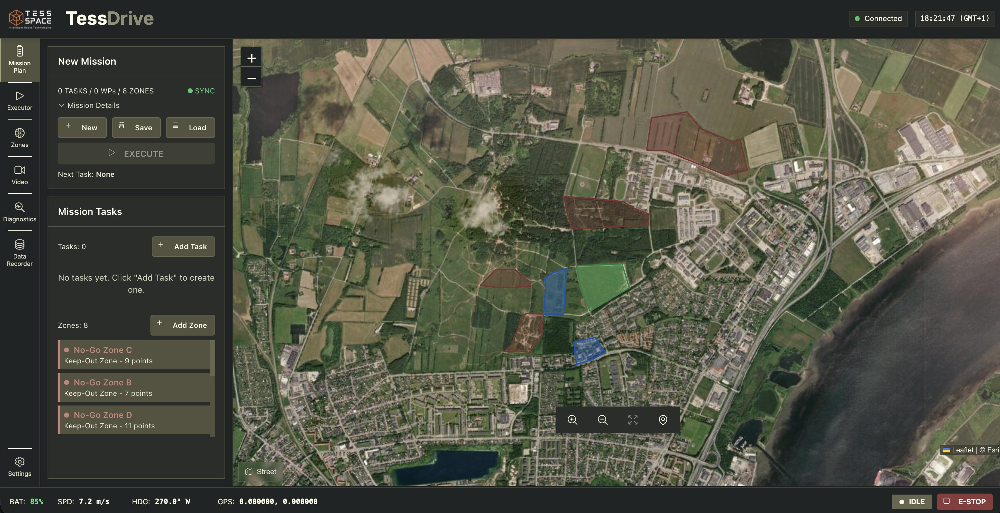

Placeholder Visual
Current TESS DRIVE interface screens
Current TESS DRIVE placeholder screens showing the mission planner, zoning, and waypoint workflow.


Product
TESS DRIVE is the operator software layer for mission planning, route approval, supervisory control, and human-on-the-loop workflows across defence, space, mining, and remote field operations.
Overview
This page will expand with interface previews, workflow examples, planning modules, and deployment details for operators managing autonomous missions.
Placeholder Visual
Current TESS DRIVE placeholder screens showing the mission planner, zoning, and waypoint workflow.

01
Prepare routes, mission phases, constraints, and operator review steps before execution.
02
Support human-on-the-loop operation with clear oversight, intervention points, and mission status.
03
Combine perception, localization, and mission data into one operator-facing planning environment.
Partners